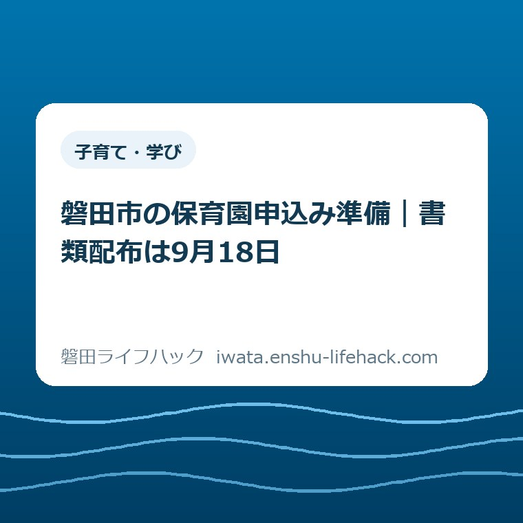
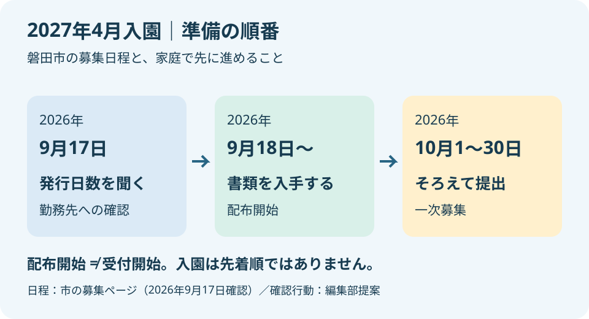
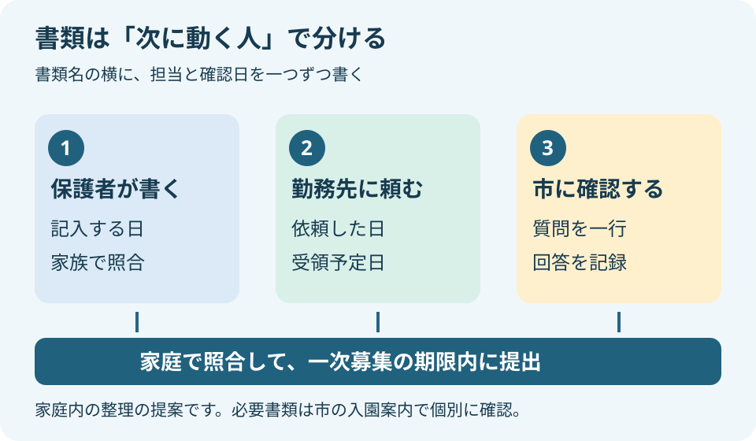

子育て・学び
磐田市の保育園申込み準備｜書類配布は9月18日

この記事の要点
Q. 2027年4月に復職したい。保育園の書類は何から準備すればいい？
A. 必要書類や利用条件は家庭ごとに異なります。磐田市の2027年4月入園は、書類配布が2026年9月18日、一次募集が10月1〜30日です。今日は勤務先に就労証明書の発行日数を確認してください。支所・にこっとは配布のみで、窓口提出先は幼児教育保育課です。電子申請の開始年は公式ページに不一致があるため、市に確認が必要です。
保育園の申込み準備は、家族だけで終わらない
保育園の必要書類や利用条件は、働き方、世帯の状況、子どもの年齢などで変わります。2027年4月の入園と復職を考える保護者は、園を探すだけでも時間を使っています。仕事の休憩中に案内を読み、育児の合間に勤務先への連絡を考える。申込書を書く前から、すでに調整の仕事を引き受けています。
大石浩之（磐田市／不動産業）です。この記事では、入園手続きの全項目を並べるより、書類を集める順番を考えます。私が先に動かしたいのは、自分の手元で完成できない書類です。勤務先が証明する書類は、保護者が夜に頑張っても、その場では仕上がりません。
磐田市「令和9年4月入園の保育園等入園申込み」は、2026年9月16日に更新されています。2026年9月17日に確認したところ、書類配布は9月18日から。一次募集は10月1日から10月30日です。配布開始と申込み開始は別の日なので、9月18日に提出まで済ませる予定は組まないでください。
今日の一歩は一つです。勤務先の担当者に「就労証明書の発行には何日かかりますか」と聞くこと。まだ希望園の順番を決められていなくても、この確認はできます。正式な依頼に必要な様式や社内手順も分かれば、配布開始後に何を渡せばよいかが見えてきます。

公式日程を、書類集めの予定に置き換える
磐田市の2027年4月入園の一次募集は、2026年10月1日（木）〜10月30日（金）です。窓口受付は午前8時30分〜午後5時で、土日・祝日を除きます。市の募集ページにある日付と時間を、家族の予定表にそのまま転記しておくと、勤務先に伝える期限の前提がそろいます。
私は、最終日の10月30日だけを予定表に書く方法には不安があります。証明書を受け取る日、内容を確認する日、提出する日は、同じ日にまとめないほうがよいと考えるからです。書類に確認したい箇所が見つかった場合、担当者からの返事を待つ時間も必要になります。
例えば、10月の前半に提出したい家庭なら、その提出予定日から逆に考えます。勤務先から返ってくる予定日を置き、その前に依頼日を置く。これは市が決めた追加の締切ではなく、家庭内の段取りの例です。勤務先の発行日数が分かるまでは、仮の日付として扱ってください。
ここで意外かもしれませんが、市は入園を先着順としていません。募集ページには、保育の必要性を考慮して入園を決めるとあります。早く提出する目的は、順番を確保することではなく、書類の不明点に対応できる余裕を残すことです。早い提出が入園を保証するわけではありません。
一次募集の結果通知は2027年1月末の郵送と案内されています。2026年10月に申込みを終えることと、復職に必要な預け先が決まることは別です。勤務先と話す際も「申込み予定」「結果待ち」「入園決定」を分けると、確定していない日程を約束せずに済みます。
勤務先には、書いてほしい内容より先に発行日数を聞く
就労証明書の発行にかかる日数は、勤務先へ確認する必要があります。今回確認した磐田市の案内から、個々の会社の所要日数までは分かりません。「数日で返るはず」と家庭側で決めず、担当部署、依頼方法、返却予定を聞いてから提出日を考えます。
問い合わせの文面は、短くて構いません。「2027年4月の保育園入園申込みに使う就労証明書について、発行までの日数を教えてください。磐田市の一次募集は2026年10月1〜30日です。指定様式を渡す方法と、返却方法も確認したいです」。これは勤務先に送るための文例で、市への申請文ではありません。
「何日」の答えをもらったら、営業日なのか、休日を含む日数なのかも確認します。担当者が書き始める日と、依頼を受け付けた日が違う場合も考えられます。会社の実際の手順に合わせて予定を組むための確認であり、特定の日数を会社に要求するためではありません。
育児休業からの復職を予定している場合は、証明する担当者が誰かを先に決めます。復職予定や勤務時間に未確定の部分があるなら、保護者が推測して完成させず、勤務先と市に記載方法を確認してください。「いつ復職できるか」という相談と、「何を証明できるか」という確認を分けると話が整理できます。
受け取り方法も、発行日数とセットで聞いておきたい点です。社内で受け取るのか、郵送なのか、データで受け取れるのか。会社で完成した日と、保護者が提出に使える状態で受け取る日は同じとは限りません。家庭の予定表には、作成完了日より受領予定日を記すほうが実用的です。
勤務先への依頼は、夫婦のどちらか一人が家族全員分を管理し続ける必要はありません。それぞれの勤務先への連絡を分担し、返却予定日だけ一枚のメモに集める方法もあります。連絡担当を分けても、誰の書類が戻っていないかを同じ場所で確認できれば、確認の重複を減らせます。
書類は「自分で書く」「誰かに頼む」「市に聞く」に分ける
磐田市「令和9年度磐田市保育園等入園案内」の4ページには、「子どものための教育・保育給付認定申請書兼保育園等入園申込書」「磐田市保育園等入園調査書」「お申込み確認シート」と、保育の必要性を証明する書類が整理されています。証明書類は家庭の状況によって異なります。まず案内の該当欄を読み、必要なものを自分の家庭用に書き出すところから始めてください。
私は、書類の正式名称だけを一覧にするより、次に動く人を横に書く方法を勧めます。「保護者が記入」「勤務先へ依頼」「市に要否を確認」の三つです。全部を「未完成」と一括りにすると、保護者が埋められない欄まで、自分の作業が遅れているように感じてしまいます。
自分で書く書類は、子どもや保護者の情報を照合しながら進めます。誰かに頼む書類は、依頼した日と返却予定日を記録します。市に聞く項目は、質問を一行で残します。この分類は公式の提出区分ではなく、家庭内で作業を見渡すための整理です。
案内では、保育の必要性を証明する書類の対象に、父母のほか同居する65歳未満の祖父母も挙げています。同居の扱いには世帯分離や同一敷地内の別棟、隣接地の記載もあります。住民票の世帯だけで判断せず、該当しそうなら案内4ページを示して市に確認してください。
ここは、書類を増やして不安にさせたい話ではありません。「うちは夫婦の分だけでよい」と思い込んでから確認し直すより、家族関係の疑問を早い段階で一つ解くほうが、依頼先を決めやすくなります。不要な証明まで一律に集めず、自分の家庭に必要かを確認してから動きます。
手続き全体の入口は、幼稚園・保育園・こども園の入園ガイドに整理しています。この記事は、2027年4月に向けて勤務先と家庭の作業をどうつなぐかに絞った読み物です。制度の一覧と、実際に誰がいつ動くかを分けて使ってください。

配布場所と受付先が違うと、外出の段取りも変わる
2026年9月18日からの申込み書類は、幼児教育保育課、各支所市民生活課、ひと・ほんの庭にこっとで配布されます。一方、窓口での提出先は幼児教育保育課です。支所とにこっとでは申請を受け付けないと、磐田市の募集ページに明記されています。
福田、竜洋、豊田、豊岡の支所で書類を受け取る予定なら、外出の目的は「書類の入手」です。提出の外出とは分けて予定を組みます。磐田市の4支所の記事も参考になりますが、今回の入園申請をそこで提出できるという意味ではありません。
にこっとで受け取れることは、日常の子育ての用事に書類の入手を重ねられる選択肢です。ただ、受け取った場所で提出も済むと思うと、もう一度出かけることになります。私は、家族に頼むときは「受け取りだけ」と一言添えるのがよいと考えます。
窓口提出を考える場合、幼児教育保育課は国府台のiプラザ3階です。募集ページの問い合わせ先は0538-37-4858。一次募集の受付終了は午後5時であり、ページ下部にある担当課の通常受付時間と混同しないようにしてください。仕事を抜けて向かうなら、申請受付の時間を基準に考えます。
良い点は、準備の入口を選べること
磐田市の2027年4月入園案内には、書類を受け取る場所と、申請を提出する場所が明記されています。市の募集ページから入園案内や申請様式も確認できます。
紙を手に取って読みたい家庭と、画面で先に内容を把握したい家庭の双方に、準備の入口がある点を私は評価します。
配布が9月18日、一次募集の開始が10月1日という順序も、勤務先への依頼を考える手掛かりになります。配布された書類を見て、会社へ渡すものと家庭で記入するものを分けられるからです。日付が決まっていることで、職場に「いつの募集で使う書類か」を具体的に説明できます。
先着順ではないと明示されている点も助かります。育児と仕事の都合がある保護者にとって、初日の朝に行けるかどうかは負担になり得ます。私は、申込みの早さを競う気持ちより、内容を確かめて期限内に出す準備へ力を向けられる案内だと受け止めます。
注文したい点は、電子申請の開始年の食い違い
2026年9月17日に確認した磐田市の募集ページでは、一次募集は令和8年10月1日からですが、電子申請欄の開始日は令和9年10月1日となっています。募集対象は令和9年4月入園です。開始年に不一致があり、この記事では電子申請の開始日を確定情報として案内できません。
私は、保護者が読み替えて判断する必要のない表示を望みます。電子申請なら勤務時間外に準備できると考える家庭もあるはずです。年の表記が食い違うと、使える時期を確認する仕事が家庭側に増えます。職員個人の問題ではなく、申請の入口で迷わせない表示にしてほしいという注文です。
電子申請を予定する場合は、市の最新の募集ページと申請画面を確認してください。不一致が残っていれば「2027年4月入園の一次募集を電子申請できる期間」を幼児教育保育課へ確認します。本記事の判断で誤記だと決めつけたり、申請画面が開くだけで受付期間内と判断したりはしません。
対案・結論——今日の確認を、勤務先への一問に絞る
2026年9月17日に始める保育園申込み準備は、勤務先に就労証明書の発行日数を聞く一問で十分です。この記事の提案は、今日中に全書類をそろえることではありません。会社から受け取るまでの時間が分かれば、家庭で書く作業をいつ進めるか決めやすくなります。
返事をもらったら、「依頼先・必要日数・渡す方法・受け取る方法」を同じメモに残します。返事がまだなら、未回答であることを残せば構いません。聞いたことと答えが出たことを区別すると、家族に引き継ぐときに、同じ問い合わせを繰り返さずに済みます。
9月18日以降に書類を入手したら、2027年4月入園用の案内かを確認します。前年度の書類が家に残っていても、それだけを頼りに進めないでください。新しい案内を一つの基準にして、勤務先へ渡す様式と家庭で保管する控えを整理することを勧めます。
園選びに迷っている家庭は、保育園と認定こども園の違いを整理した記事も使えます。ただし、同記事には2026年8月31日時点の情報が含まれます。2027年4月入園の日程と書類は、今回公表された市の案内を優先してください。
受け取った書類は、提出前に家庭側でも確認します。氏名や対象者が違っていないか、依頼した内容が返ってきたか、読めない箇所がないか。証明内容を自分で都合よく直すのではなく、疑問があれば発行元へ戻して確かめます。これも提出予定日に余裕を残す理由です。
大石の視点——期限より先に、人を待つ時間を見る
私は、保育園の申込み準備を「保護者が頑張れば終わる仕事」にしてはいけないと考えます。制度が整っていても、使う人が動ける段取りになっていなければ役に立ちません。書類を集める人は、その間も仕事と育児を続けています。締切だけ伝えて、あとは家庭の努力に預ける案内では足りない。
私なら、机の上に申込書を並べる前に、勤務先から書類が戻る日を一つ置きます。これは実際にあった家庭の相談話ではなく、段取りについての私の意見です。自分で動かせない待ち時間を先に見つければ、家族が夜に記入する日も、外へ出る日も、その後に無理なく置けます。
迷うのは、書類を急いで整えることと、復職後の働き方を急いで決めることの境目です。早く準備したいからといって、まだ調整中の勤務時間を確定した話にするのは違うと思います。発行日数は先に聞く。未確定の勤務条件は、未確定のまま記載方法を相談する。この二つは両立できます。
私が勧めたい成果は、申込書の空欄が一気に埋まることではありません。「誰の返事を待っているか」が一つ分かることです。今日の確認を勤務先への一問に絞るのは、保護者の負担を増やさず、次に進むための材料を手に入れてほしいからです。
よくある質問
2027年4月入園の準備で迷いやすい、書類の受け取り日、勤務先への依頼時期、提出順の扱いを整理します。
9月18日に書類を受け取ったら、その日に申込みもできますか？
9月18日は書類配布の開始日です。2027年4月入園の一次募集は、2026年10月1〜30日です。支所とにこっとは配布のみで、窓口提出先は幼児教育保育課です。受け取りと提出を別の予定にして、必要書類を案内で照合してください。電子申請の開始年には不一致があるため、市の最新情報で確認が必要です。
就労証明書は、いつ勤務先へ頼めばよいですか？
まず発行までの日数を勤務先に確認し、家庭の提出予定日から逆算して依頼します。会社ごとの所要日数は市の案内からは分かりません。営業日かどうか、指定様式の渡し方、返却方法も確かめます。復職予定や勤務条件が未確定なら、推測で埋めず、勤務先と市に記載方法を確認してください。
一次募集の初日に提出しないと不利になりますか？
磐田市は先着順ではないと案内しています。世帯の状況や保育を必要とする理由などを踏まえて入園を調整するため、初日の提出が入園を保証するものではありません。早めに準備する目的は、不明点を確認する余裕を残すことです。家庭に必要な書類を確認し、一次募集の期限内にそろえて提出してください。
参考にした公式情報
- 令和9年4月入園の保育園等入園申込み／磐田市（2026年9月17日確認）
- 令和9年度磐田市保育園等入園案内・第1版／磐田市（2026年9月17日確認、本文4ページを参照）

大石浩之／磐田市／不動産業・宅地建物取引士
最終確認日：2026-09-17 ／ 本記事は公表情報と執筆者の見解を分けて記載しています。制度・日程は変更される場合があります。個別条件で必要書類や利用可否が変わるため、最後は磐田市の公式募集ページと幼児教育保育課で確認してください。